Violets are blue
– Alice
:Alice :says << :Violets :haveColor :Blue >> .
🗄️ ?
Making statements about statements
-
_:s rdf:type rdf:Statement ;
rdf:subject :Violets ;
rdf:predicate :haveColor ;
rdf:object :Blue .
RDF 1.0: Reification, singleton properties
Verbose
-
_:g { :Violets :haveColor :Blue . }
RDF 1.1: Named graphs
Imprecise semantics
-
<< :Violets :haveColor :Blue >>
RDF 1.2: Quoted triples
Originating from Olaf Hartig's RDF* proposal (later RDF-star)
Triples can be quoted as terms
-
A new term type for subject and objects
IRIs, blank nodes, literals, triples
-
Nested quoting
The depth of quoted triples has no theoretical limit
:Alice :says << :Bob :says << :Violets :haveColor :Blue >> >> .
-
Querying quoted triples with SPARQL
Querying quoted triples or terms inside (nested) quoted triples
?person :says << :Violets :haveColor ?color >> .
?p1 :says << ?p2 :says << :Violets :haveColor ?color >> >> .
Wide adoption of quoted triples
-
Several systems adopted RDF-star even before standardization
BlazeGraph, GraphDB, Stardog, …
No details about indexing and performance → open knowledge gap
How to index quoted triples,
and what is the impact on ingestion, storage, and query performance?
Dictionary-based approaches
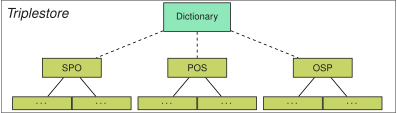
1. Singular Dictionary
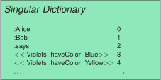
-
Quoted triples are stored fully inside the dictionary
+ Simple implementation
- Inefficient querying of triple patterns with quoted variables
2. Quoted Triples Dictionary
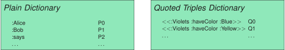
-
Quoted triples are stored in a separate dictionary
Smaller scope for querying of triple patterns with quoted variables
3. Referential Quoted Triples Dictionary
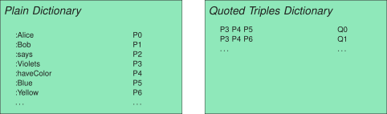
-
Nested terms are dictionary-encoded
Avoids storage redundancy
4. Indexed Quoted Triples Dictionary
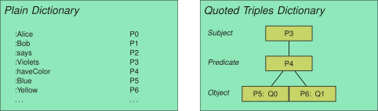
-
Indexed access to quoted triples
More efficient querying of triple patterns with quoted variables
Singular and referential dictionaries achieve lowest storage size
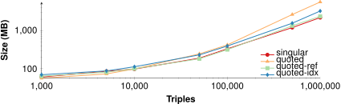
Singular and quoted dictionaries achieve lowest ingestion times
Depth 1: 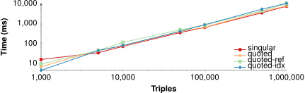
Depth 5: 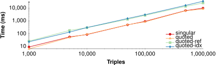
Minimal difference in performance for highly selective queries
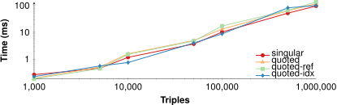
Indexed Quoted Triples Dictionary significantly faster for medium selectivity
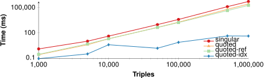
Indexed Quoted Triples Dictionary significantly faster for low selectivity
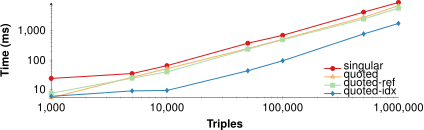
Conclusions
-
Indexed Quoted Triples Dictionary achieves significantly faster query performance
At the cost of slightly slower ingestion and a slight increase in storage size
→ RDF/SPARQL 1.2 can be supported with acceptable levels of performance
-
Current experiments are limited to triple pattern queries
Future experimentation is needed with SPARQL queries
-
Current storage approaches are only dictionary-based
Future work on integrating quoted triples directly into main indexes